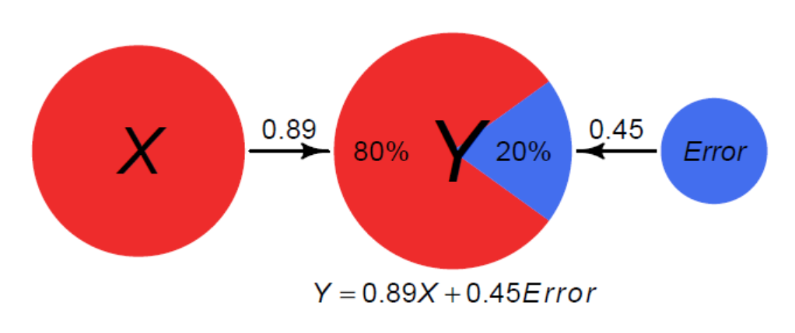

Week 09: Model Selection & Variability
Date: October 19, 2025
Today…
Regression & Model Selection

Regressions
With regression, we are building a model that we think best represents the data, and the broader world
\[ Data = Model + error \]
Regression Equation
Overall, we are providing a model to give us a “best guess” on predicting our outcome
\[ Y_i = b_0 + b_1X_i + e_i \]
This equation is capturing how we are able to calculate each observation ( \(Y_i\) )
| Term | Meaning |
|---|---|
| \(b_0\) | Intercept - when X = 0 |
| \(b_1\) | Slope - for every 1 unit change in X, there are \(b_1\) unit change in Y |
| \(X_i\) | Predictor Variable |
| \(e_i\) | Error/Residuals |
Unstandardized vs. Standardized
What is the Difference? (other than the runes)
Unstandardized:
\[ Y_i = b_0 + b_1X_i + e_i \]
Standardized:
\[ Y_i = \beta_0 + \beta_1X_i + \epsilon_i \]
\[ Z_y = \beta_0 + \beta_1Z_x + \epsilon_i \]
Example - LEGO Data
vars n mean sd median trimmed mad min
set_name* 1 59 30.00 17.18 30.00 30.00 22.24 1.00
set_number 2 59 37023.29 25089.50 31167.00 35693.88 30827.70 10294.00
number_of_pieces 3 59 2416.58 2384.39 1503.00 2073.37 1906.62 104.00
price 4 59 218.19 214.72 129.99 189.81 163.09 9.99
max range skew kurtosis se
set_name* 59.00 58 0.00 -1.26 2.24
set_number 76974.00 66680 0.55 -1.21 3266.37
number_of_pieces 10001.00 9897 1.32 1.37 310.42
price 999.99 990 1.28 1.48 27.95Visualization
Good to see the scatterplots of this relationship
Estimating Coefficients
We are bringing in 2 sources of data (information we don’t need to estimate)
# of Pieces (Mean = 2416.5762712, SD = 2384.3877997)
Set Price (Mean = 218.1935593, SD = 214.7204998)
Need to estimate \(b_0\) and \(b_1\)
Regression coefficient, \(b_{1}\)
Calculating the slope
\[\Large b_{1} = \frac{cov_{XY}}{s_{x}^{2}}\]
üöß Brief Detour - Calculating (Co)Variances
Variance: The average squared difference between each data point and the mean; How far each observation is from the mean, on average, in squared units
\[ Var(X) = \frac1{N-1} \sum (X_i - \bar X)^2 \]
Covariance: Average cross product of deviations; How related are the deviations of two different variables across observations
\[ Cov(X, Y) = \frac 1{N-1} \sum (X_i - \bar{X}) (Y_i - \bar{Y}) \]
Example on the board (reminder to Dr. Haraden to do something here)
Note where the regression line passes through
Look at deviations (variance) to covariance
Code
mprice <- mean(lego$price)
mnum <- mean(lego$number_of_pieces)
lego %>%
ggplot(aes(number_of_pieces, price)) +
geom_point() +
geom_hline(yintercept = mprice,
color = "orange",
linewidth = 1.5) +
geom_vline(xintercept = mnum,
color = "purple",
linewidth = 1.5) +
geom_smooth(method = "lm", se = FALSE,
color = "black", linewidth = 1.5)Regression coefficient, \(b_{1}\)
\[\Large b_{1} = \frac{cov_{XY}}{s_{x}^{2}} = r_{xy} \frac{s_{y}}{s_{x}}\]
Regression Coefficient, \(b_0\)
Calculating the Intercept:
\[\Large b_0 = \bar{Y} - b_1\bar{X}\]
The intercept adjusts the location of the regression line to ensure that it runs through the point \(\large (\bar{X}, \bar{Y}).\)
What is the Regression Model?
Using the calculations, identify what the linear model would be.
What is the Regression Model?
Using the calculations, identify what the linear model would be.
You hear about 3 new sets coming out that you are interested in. Since you have this regression model, you can calculate the total price for each. How much money do you need to save (excluding taxes) to buy all 3 sets?
| Set 1: 1031 pieces | Set 2: 357 | Set 3: 4154 |
Before the Break
Take the Stroop Task and record your incongruent, congruent and stroop effect on your worksheet
Back to the Show
Last time on “Stats Island”, Dr. Haraden asked everyone to look at colors and words. Plus, Rupert was voted off the island. Who could be next??
Explaining Variance
Stroop Data Modeling
Research Question: Sleep Quality is negatively related to the Stroop Effect. Lower sleep quality will predict a greater Stroop effect.
Explaining Variance
Visualize the Stroop Effect data
- What is the best “model” to explain this data? If you had no information, what would be your best guess for someone’s score?
. . .
We are looking to explain variance in our outcome (Stroop Performance)
Note
The total distance from the mean to each point is the Total Sum of Squares - The total amount of “error” we are trying to explain
The mean can be considered the “null model” in that it is the most basic
Null to Sleep model
We can then introduce another variable to try explain more of the variance in the Stroop Effect
Note
There should be some visualizations on the board with mean and regression lines
The distance from each point down to the original ‘mean’ is the total deviation.
The portion from the ‘mean’ up to our new ‘sleep model’ is the explained deviation (SSM). This is the improvement we gained by considering sleep!
The leftover bit from our ‘sleep model’ to the actual data point is the unexplained residual (SSE). This is the error our model couldn’t account for.
Linear Regression
Use the information and let’s do it in R instead of on the board
Visualize the relationship
Run a linear regression
Model Fit
Take a look at the \(R^2\) value
Is there any other data that we have that could impact overall Stroop Effects?
After including it in the model, we can examine the change in \(R^2\)
What would happen if we put the random number variable in there?
Comparing Models
Can compare models using an ANOVA when one model is nested within another
Note
Nested Models: where one model (Model 0) contains a subset of the predictors from the other one (Model 1). Model 1 contains all of the predictors included in Model 0, plus one or more additional predictors. When this happens we say that Model 0 is nested within Model 1.
Model Diagnostics
As we get more complex, we want to be sure to check how our model is functioning. One way is to use \(adjusted \ R^2\) to get a sense of the amount of variance each predictor is bringing.
Need to be careful of overfitting the model to the data
Multicollinearity - when predictors are highly related to one another
- Checked with the Variance Inflation Factor (VIF)
Homogeneity of Variance - the variance of the residuals is assumed to be constant
check_models
This will check everything for you in regressions, let’s try it out
https://easystats.github.io/performance/reference/check_model.html
Selecting a Model
One of the most daunting tasks can be identifying the “right” statistical model for the data you have
You may see flowcharts like this:

Selecting a Model
If you are asking which model is “right”, you are doing it backwards
“All models are wrong, some models are useful.” -George Box
Remember: \(Data (The\ Truth) = Model + Error\)
Instead, think about identifying a model as “Model Based Reasoning” in which you will need to defend the choices you made
Example: t-test vs. ANOVA vs. Regression
This might be something that we are considering between. How do we pick the “right” one?
Start with some data where we have 2 groups and we identify a 2 point difference in the groups scores
set.seed(2025)
# Two independent groups with equal variances
n0 <- 80; n1 <- 80
mu0 <- 12; mu1 <- 10 # true mean difference = -2
sigma <- 3
y0 <- rnorm(n0, mu0, sigma)
y1 <- rnorm(n1, mu1, sigma)
# Put that in a data frame
dat <- data.frame(
dep = c(y0, y1),
group01 = c(rep(0, n0), rep(1, n1))
) %>%
mutate(group = factor(group01, levels = c(0,1), labels = c("control","treatment")))t-test
# A tibble: 1 × 10
estimate estimate1 estimate2 statistic p.value parameter conf.low conf.high
<dbl> <dbl> <dbl> <dbl> <dbl> <dbl> <dbl> <dbl>
1 2.68 12.1 9.46 5.75 4.48e-8 158 1.76 3.60
# ℹ 2 more variables: method <chr>, alternative <chr>ANOVA
Regression
Comparing Methods
[1] -2.676943[1] -2.676943[1] 33.06772 t
33.06772 value
33.06772 [1] 0.00000004475048[1] 0.00000004475048[1] 0.00000004475048Examples in R
Try some live coding! Also known as “Another opportunity for Dr. Haraden to potentially embarrass himself”
https://archive.ics.uci.edu/dataset/320/student+performance
https://archive.ics.uci.edu/dataset/697/predict+students+dropout+and+academic+success